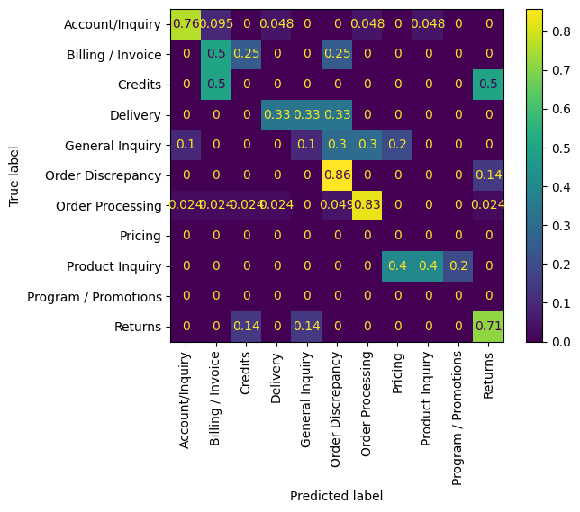

data_dir = Path("../data")
assert data_dir.exists()evaluate
Evaluate our predictions
sample_predictions_path = data_dir / 'sample_predictions.csv'
assert sample_predictions_path.exists()
predictions = pd.read_csv(sample_predictions_path)
predictions.loc[:, 'pred'] = predictions.pred.str.strip()
predictions.loc[:, 'label'] = predictions.label.str.strip()
predictions.head()| pred | label | idx | |
|---|---|---|---|
| 0 | Order Discrepancy | Billing / Invoice | 50493 |
| 1 | Order Processing | General Inquiry | 13780 |
| 2 | Account/Inquiry | Account/Inquiry | 4943 |
| 3 | Delivery | Account/Inquiry | 37088 |
| 4 | Billing / Invoice | Billing / Invoice | 47271 |
performance_kwargs = {
'y_true': predictions.label,
'y_pred': predictions.pred
}Accuracy
metrics.accuracy_score(
**performance_kwargs
)0.67Classification report
performance_report_str = metrics.classification_report(
zero_division=np.nan,
output_dict=False,
**performance_kwargs)
print(performance_report_str) precision recall f1-score support
Account/Inquiry 0.89 0.76 0.82 21
Billing / Invoice 0.33 0.50 0.40 4
Credits 0.00 0.00 nan 2
Delivery 0.33 0.33 0.33 3
General Inquiry 0.33 0.10 0.15 10
Order Discrepancy 0.46 0.86 0.60 7
Order Processing 0.89 0.83 0.86 41
Pricing 0.00 nan nan 0
Product Inquiry 0.67 0.40 0.50 5
Program / Promotions 0.00 nan nan 0
Returns 0.62 0.71 0.67 7
accuracy 0.67 100
macro avg 0.41 0.50 0.54 100
weighted avg 0.72 0.67 0.69 100
Confusion Matrix
matrix = metrics.confusion_matrix(
**performance_kwargs
)
matrix.diagonal()/matrix.sum(axis=1)/var/folders/cf/vg67tzns4y134rtjmmt9cd000000gp/T/ipykernel_15272/3935502939.py:4: RuntimeWarning: invalid value encountered in divide
matrix.diagonal()/matrix.sum(axis=1)array([0.76190476, 0.5 , 0. , 0.33333333, 0.1 ,
0.85714286, 0.82926829, nan, 0.4 , nan,
0.71428571])matrix_display = metrics.ConfusionMatrixDisplay.from_predictions(
normalize='true',
xticks_rotation='vertical',
**performance_kwargs
)